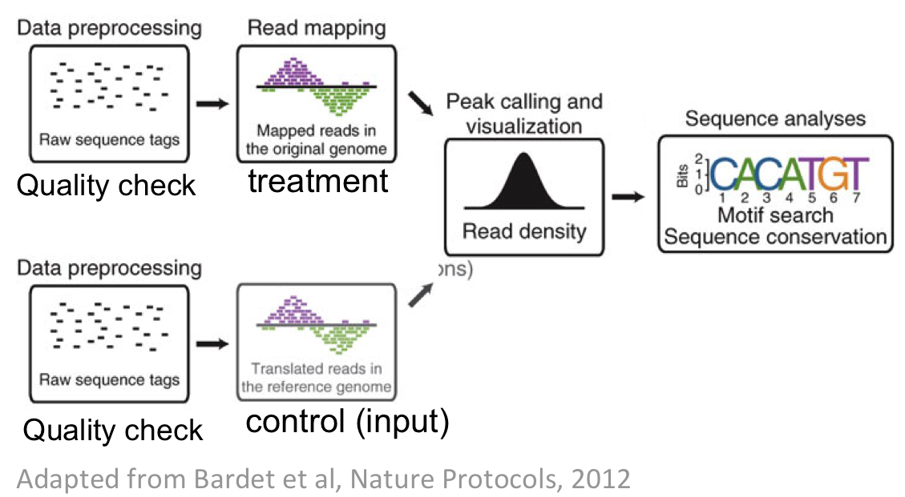

Introduction
Goal
The aim is to :
- have an understanding of the nature of ChIP-Seq data
- obtain a public dataset from online databases
- perform an analysis workflow including Quality Check, read mapping, peak-calling
- perform a motif analysis with online web programs (RSAT suite)
In practice
The goal of this tutorial is to perform the successive steps to obtain a list of peaks.
We will first see how to retrieve the raw reads, get basic information on this dataset, then perform the mapping of the reads on the reference genome to obtain the coordinates of the reads, and finally perform the peak-calling step, to look for clusters of reads forming peaks. As downstream analysis, we will perform motif discovery in the peak dataset.

This training does not cover all methods available today. It does not aim at bringing users to a professional NGS analyst level but provides enough information to allow biologists understand what DNA sequencing practically is and to communicate with NGS experts for more in-depth needs.
Galaxy platform
We will use a publicly accessible server that provides tools for Next Generation Sequencing (NGS) analyses: the
Galaxy server.
This is the main server, please note that there are many other public (and private !) Galaxy servers around the world.
Dataset description
For this exercice, we will use a dataset produced by Chen et al (see on the right of the page for details on the publication) for a study of transcription factors involved in the differenciation of stem cells. For time reasons, we will focus on one factor: Oct4. The ChIP-seq experiment was conducted on mouse cells, on an Illumina Genome Analyzer sequencer. These two information are necessary before starting analyzing these data.
Downloading ChIP-seq reads from GEO into Galaxy
Goal: Identify the dataset corresponding to the studied article and retrieve the data (reads as FASTQ file) corresponding to one experiment and the control.
1 - Obtaining an identifier for a chosen dataset
Within an article of interest, you can find the identifier of the dataset, which is usually stored in the NCBI’s Gene Expression Omnibus (GEO)
or EBI's ArrayExpress (note that the two databases exchange data, so in fine, they have the same content).
Open the PDF (see link on the right). Search for a sentence mentioning the deposition of the data in a database.
(tip: automatically search in the pdf "GEO")
What is the accession number ?
The GEO identifier is GSE11431
2 - Accessing GSE11431 from GEO
- Search in google GSE11431. Click on the first link to directly access the correct page on the GEO database.
- This GEO entry contains multiple chip-seq datasets for different factors (total of 16 samples). At the bottom of the page, click on the subseries related to the Oct4 dataset. (this subseries has its own identifier:GSM288346)
- In the new page, go to the bottom to find the SRA identifier. This is the identifier of the raw dataset stored in the SRA database.
- Copy the identifier SRX000546 (do not click on the link)
3 - Downloading FASTQ file from the EBI database
Although direct access to the SRA database at the NCBI is doable, in practice it's simpler and quicker to download datasets from the EBI (European Bioinformatics Institute) website, located in Europe. The EBI hosts the ENA database (European Nucleotide Archive), which encompasses the data from SRA.
- Go to the EBI website. Paste your identifier (SRX000546) and click on the button "search"
- Click on the first result. On the next page, there is a table with 4 rows, indicating that this experiment was done with four technical replicates. We will use the first replicate (SRR002012) On the right, there is a link to the FASTQ file. Do not download the file in the context on this course, as these are large files. For efficiency, this file has already been downloaded for you in the Galaxy platform for the rest of the course.
- To find the FASTQ file for the control dataset, redo the same steps starting from the GEO web page (see step 2.2) and choose ES_GFP. Similarly, do not download the FASTQ file, it has already been done to gain time. We will focus on the replicate SRR001996
4 - Import the FASTQ file into Galaxy
Go to https://usegalaxy.org/u/morgane/h/oct4-and-input-fastq
Click on the link "import history" (top right) to import the FASTQ files in your "history"
The following steps have already been done for you, this is for information only and explains how the FASTQ files were transfered into Galaxy)
Click on the left menu on "Get data > Upload data". In the pop-up page, click at the bottom on the button "Paste/Fetch data", copy the URL of the FASTQ file (found on the EBI website), and click on the button "start". Choose the genome assembly mm9.
At this point, you should know how to find a published dataset and download the raw FASTQ files, one for the experiment, one for the control. In which organism are you working ?
Quality control of the reads and statistics
Goal: Get some basic information on the data (read length, number of reads, global quality of dataset)
1 - Getting the FASTQC report
- In the right menu in Galaxy, click on "NGS: QC and manipulation" then "FastQC Read Quality reports". Click on execute to run FASTQC on the first (Oct4) dataset. Once the History appears with 2 new blocks (grey or yellow), launch the same analysis on the control dataset. Once it's green, calculation is finished, click on the result name and the little eye to see the result itself.
Analyze the result of the FASTQC program:
How many reads are present in the file ?
What is the read length ?
Is the overall quality good ?
Are there any concerns raised by the report ? If so, can you tell where the problem might come from ?
There are 5 672 003reads of 26bp. The overall quality is average, and drops at the last position, which is usual with Illumina sequencing, so this feature is not raising hard concerns. There are several "red lights" in the report, but this is mainly due to the fact that this dataset is not so recent (2008).
- Now do the same with the control (Input) dataset (SRR000996.fastq).
Analyze the result of the FASTQC program
There are 5 898 008 reads of 26bp. The overall quality is good, although it drops at the last position, which is usual with Illumina sequencing, so this feature is not raising hard concerns.
At this point, you should be confident about the quality of the datasets, and wether it's worth following with analyzing the datasets.
Mapping the reads with Bowtie
Goal: Obtain the coordinates of each read on the reference genome.
1 - Choosing a mapping program
There are multiple programs to perform the mapping step. For reads produced by an Illumina machine for ChIP-seq, the currently "standard" programs are BWA and Bowtie (versions 1 and 2). We will use Bowtie version 1.0.0 for this exercice.
2 - Mapping the experiment
- In the left menu click on "NGS: Mapping" then 'Map with Bowtie for Illumina"
- Let's see the parameters of bowtie:
- For the reference genome, keep Use a built-in index and select the mouse assembly mm9
- Keep single-end for the library
- The FASTQ file should be your read file (which is in FASTQ format)
- In the Bowtie settings, choose Full parameter list. As you can see, this program has many parameters !!!. We will only change few ones:
- Change the Maximum permitted total of quality values at mismatched read positions (-e): to 40.
- Change the Number of mismatches for SOAP-like alignment policy (-v): to 2, which will allow two mismatches anywhere in the read, when aligning the read to the genome sequence.
- Change the Suppress all alignments for a read if more than n reportable alignments exist (-m): to 1, which will exclude the reads that do not map uniquely to the genome.
- This is the longest step of this protocol, so we won't execute this step. Import the history from : https://usegalaxy.org/u/morgane/h/fastqc-and-mapping
3 - Filtering the uniquely mapped reads
- The output is SAM format, which contains all reads (mapped and not mapped), along with flags indicating whether there are mapped or not, their quality values and their genomic coordinates (only for the mapped ones).
- For the following steps, we are only interested in the mapped reads. We are going to filter out these reads: click on NGS: SAM Tools, and then Filter SAM
- Click on add a new flag button, then in the Type menu, select read is unmapped, and then select No. Indeed, we do not want the unmapped reads (= we want the mapped ones).
- Click on the execute button.
How many lines are there in this final file ? This represent the number of uniquely mapped reads.
~2,100,000 lines for Oct4 and ~1,700,000 lines for the Input.
4 - Mapping the control and filtering
- It is already in your history, but outside of this course context, the control dataset should be mapped as above.
At this point, you should have two filtered SAM files, one for the experiment, one for the control.
Peak calling with MACS
Goal: Define the peaks, i.e. the region with a high density of reads, where the studied factor was bound
1 - Choosing a peak-calling program
There are multiple programs to perform the peak-calling step. Some are more directed towards histone marks (broad peaks) while others are specific to narrow peaks (transcription factors). Here we will use MACS version 1 because it's known to produce generally good results, and it is well-maintained by the developper. A new version (MACS2) is being developped, but still in testing phase so we will not use it today.
2 - Calling the peaks
- In the section NGS Toolbox Beta. Click on NGS: Peak Calling, and then MACS
Enter an Experiment Name (e.g. OCT4 Chen-2008).
For the ChIP-seq tag file, select the filtered SAM file for Oct4 you
created in the previous step.
- Click on "ChIP-Seq Control File" and select the filtered SAM file for Input you
created in the previous step.
Effective genome size: this is the size of the genome
considered "usable" for peak calling. This value is given by the
MACS developpers on their website. It is smaller than the
complete genome because many regions are excluded (telomeres,
highly repeated regions...). The default value is for human
(2700000000), as we work on mouse,
enter 1870000000
Set the Tag size to 26bp (the default is 25).
Leave all other options to their default values and
click Execute.
While the program is running, two yellow boxes should appear
in the "History" frame at the right of the Galaxy
Window. After completion of the job, the boxes will be colored
in green. The first box contains an HTML page with links to
the results in various formats. The second box contain a BED
file with the coordinates of the peaks.
3 - Analyzing the MACS results
Look at the files that were created by MACS. How many peaks
("regions") were detected by MACS ?
Check the number of lines in the Bed file : 2,522 regions. In the HTML result, also check the file 'OCT4_Chen-2008_model.pdf' to see the value d calculated by MACS.
At this point, you should have a BED file containing the peak coordinates. If necessary, copy this complete history : https://usegalaxy.org/u/morgane/h/completeworkflow
Motif analysis
Goal: Define binding motif(s) for the ChIPed transcription factor and identify potential cofactors
1 - Retrieve the peak sequences corresponding to the peak coordinate file (BED)
For the motif analysis, you first need to extract the sequences corresponding the the peaks. There are several ways to do this. We will use RSAT fetch-sequences.
- Go to RSAT server (located in Cuernavaca at CCG) and in the left menu, click on "NGS ChIP-seq" and "fetch sequences from UCSC"
- Choose mm9 genome assembly
- Download the peak (bed) file on your laptop (in Galaxy, click on the little floppy disk icon). If you have issues, download the file from here
- Upload in the RSAT page by clicking on the button under "Upload a file from your computer", and choose the peak file from your computer.
- Click on the button "Go" and wait for the result page. Then click on the button "Peak-motif"
2 - Motif discovery with RSAT
- The default peak-motifs web form only displays the essential options. There are only two
mandatory parameters that are already filled thanks to the automatic transfer of the sequences
a. The title box
b. The sequences
- We could launch the analysis like this, but we will now modify some of the advanced options in order to fine-tune the analysis according
to your data set.
- Open the "Reduce peak sequences" title, and make sure the "Cut peak sequences: +/- " option is set to 0 (we wish to analyse our full dataset)
- Open the “Motif Discovery parameters” title, and check the oligomer sizes 6 and 7 (but not 8). Check "Discover over-represented spaced word pairs [dyad-analysis]"
- You can indicate your email address in order to receive notification of the task submission and completion. This is particularly useful because the full analysis may take some time for very large datasets.
- Click “GO”. As soon as the query has been launched, you should receive an email indicating confirming the task submission, and providing a link to the future result page.
- The Web page also displays a link, You can already click on this link. The report will be progressively updated during the processing of the workflow. The already calculated results are here
Look at the top of the report (Sequence composition panel). This is a summary and composition in nucleotides and di-nucleotides of your peak dataset. Among the motif found, do you find Oct4 (also known as Pou5f1) ?
The found motifs are all compared to know collection of motifs (Jaspar vertebrates for this analysis). There are indeed several motifs related to Pou5f1, and POU2F2 (synonyme Oct2) that is very similar. We also find the dimer Pou5f1::Sox2. More info
here, check figure 4.
At this point, you should know if your motif analysis has output a motif for your ChIped TF, and if you have potential cofactors to suggest.